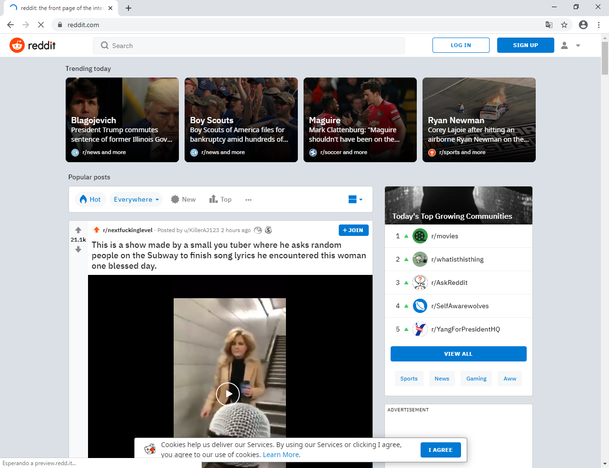
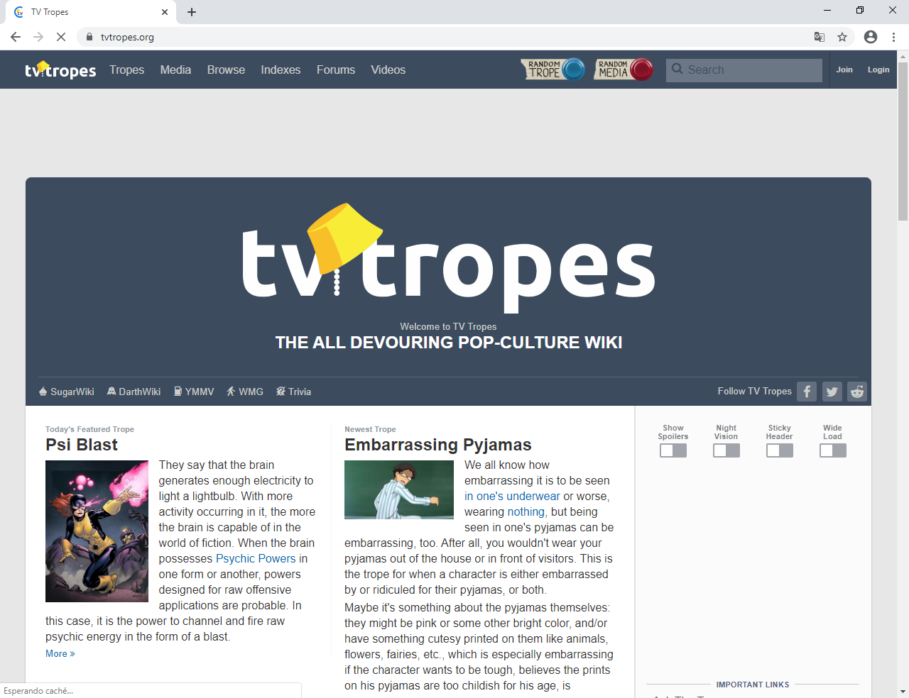
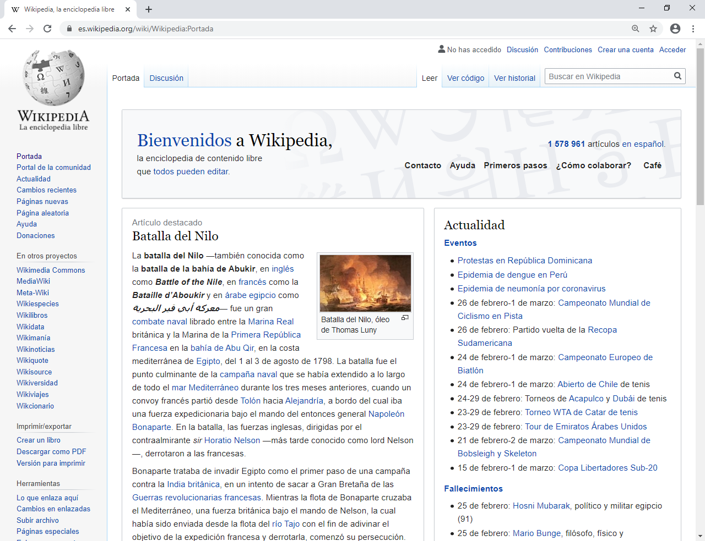
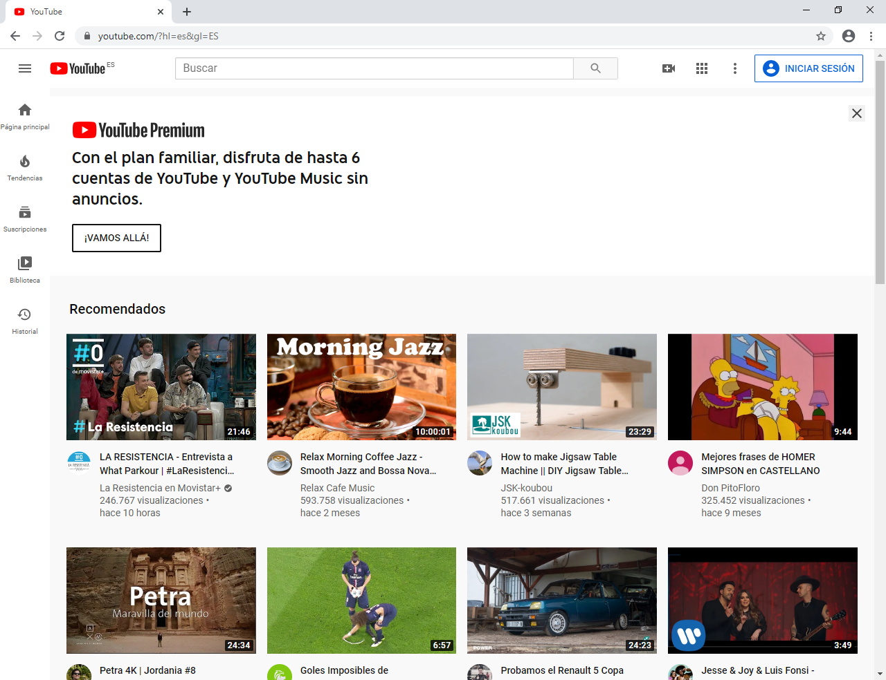

Reddit es un sitio web de marcadores sociales y agregador de noticias donde los usuarios pueden añadir texto, imágenes, vídeos o enlaces.
TV Tropes es una wiki angloparlante que recoge y expande la diversidad de elementos y convenciones encontrados en todo tipo de ficción y trabajos creativos, centrándose especialmente en la narratología y sus conceptos.
Wikipedia es una enciclopedia libre,nota 2 políglota y editada de manera colaborativa. Es administrada por la Fundación Wikimedia, una organización sin ánimo de lucro cuya financiación está basada en donaciones.
YouTube es un sitio web de origen estadounidense dedicado a compartir videos. Presenta una variedad de clips de películas, programas de televisión y vídeos musicales, así como contenidos amateur como videoblogs y YouTube Gaming.
